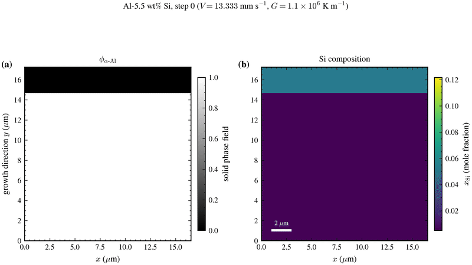

MicroSim Phase Field Solidification: What We Added to an Open Source Workflow
The first serious lesson from our recent MicroSim work was uncomfortable: the simulation image is the last thing you should trust.
A beautiful phase-field plot can be produced by a solver path that never used the parameter you thought it used. It can come from a restart that changed the physics at the boundary. It can come from a moving window that refilled rows at the wrong temperature. It can even be numerically finite and still answer the wrong question.
That is why this post is not only about a result. It is about what we had to add around MicroSim before we were willing to treat an Al-Si solidification run as scientific evidence. The public code work lives in our maintained fork: github.com/fysalqayyum/MicroSim.
Short answer: MicroSim is an open-source microstructure simulation platform for phase-field and related ICME workflows. Our contribution so far is a maintained fork that repairs and documents the KKS OpenCL path we needed for Al-Si solidification, adds CALPHAD and post-processing tooling, and separates solver qualification from scientific calibration.
MicroSim Is More Than a Demo Solver
MicroSim matters because it sits in a rare space. It is not a closed commercial package, and it is not a single-purpose script attached to one paper. It is an open-source ICME code base that gives researchers a starting point for real microstructure evolution problems.
For phase-field researchers, that matters. Many groups can write equations. Fewer groups can maintain a code path that reads inputs, handles thermodynamic tables, writes fields, restarts long runs, and can still be examined by another researcher. Open code changes the conversation because the method is not hidden behind a license server.
That openness is also the reason we chose to work with it. Our target was two-phase Al-Si solidification in a laser-based process window. The scientific question needed the process-structure link that I have written about before in the context of simulation chains for additive manufacturing of aluminum alloys. Thermal conditions alone were not enough. We needed a microstructure model that could carry composition, phase evolution, interface motion, and eventually morphology metrics.
The right way to say this is simple: MicroSim gave us a serious foundation. It did not give us a finished research campaign. That second part had to be built.
The Gap Appears When the Question Becomes Publishable
Most simulation failures do not announce themselves with a crash. They finish politely. They write files. They produce color maps. They give you exactly enough evidence to be wrong with confidence.
That is the gap between running software and producing publishable computational materials science. A publishable run needs more than a field image. It needs thermodynamic provenance, active solver-path proof, finite-field diagnostics, restart equivalence, controlled moving-window behavior, and post-processing that refuses invalid measurements.
This became clear in our MicroSim work very quickly. We were not asking whether MicroSim could draw an interface. We were asking whether a specific KKS OpenCL path, with Function_F = 4, with Al-Si thermodynamics, with a long moving-window directional run, could support claims about phase fraction, tip undercooling, and morphology.
A completed phase-field job is not a validated phase-field result. In our workflow, "builds," "finite," "restart-qualified," "window-qualified," "morphology-qualified," and "calibrated" are different statuses. Collapsing them into one word hides the exact layer where the evidence is still weak.
That language sounds fussy until a long run fails at exactly one of those layers. Then it becomes the difference between a controlled diagnosis and weeks of retuning parameters that were never the cause.
What Was Missing When We Started
The missing pieces were not one thing. They were a chain.
First, the thermodynamics had to be traceable. For Al-Si, using Function_F = 4 means the solver reads equilibrium-composition and Hessian tables. Those tables cannot be a black box. We needed a reproducible route from a redistributable CALPHAD source into the CSV files MicroSim consumes, with checks on eutectic temperature and composition.
Second, the active code path had to be proven. A value printed from an input file is not proof that the device kernel uses it. In our work, we had to follow parameters from parser to host data to device buffers to the selected OpenCL kernel. That is ordinary software engineering, but it is often missing from scientific simulation notes.
Third, restarts and moving windows had to be treated as physics, not file handling. Directional solidification runs are long. They need checkpointing. They often need a moving domain. If restart gates use local loop time instead of absolute time, or if refill rows use the wrong cumulative shift, the run can remain finite while silently changing the thermal history.
Fourth, the post-processing had to stop us from measuring nonsense. A residual-liquid fraction measured on a thresholded cell count is not the same as a phase-field integral on the eutectic isotherm. A front statistic that silently drops columns with no crossing can bias every number downstream. The analysis code has to carry these refusals inside it.
The hardest debugging moments were not dramatic crashes. They were cases where the fields looked calm, the job ended normally, and the only honest conclusion was: this run passed the easy tests and failed the one test that mattered.
That is why the contribution became larger than a few source patches. We had to build the habits, scripts, and guardrails that make an open-source solver usable in a paper-grade workflow.
The Code Had To Be Repaired Before The Physics Could Be Trusted
Some repairs were direct solver fixes. The KKS OpenCL path needed attention around temperature-dependent Function_F = 4 behavior, anisotropic gradient calculations, anti-trapping switches, moving-window refill, restart history, binary output, and long-number input parsing.
Other repairs were about portability and maintainability. We added build improvements, macOS endian compatibility in selected writers, clearer documentation, security and contribution files, and a public record of what the fork maintains and what it does not claim.
The moving-window and restart fixes were especially important. For our directional solidification runs, the solver needed to refill new rows as liquid at a temperature consistent with absolute time and cumulative window shift. Restarted segments also had to preserve the physics gates that were active before the checkpoint. Otherwise, a segmented run is not the same experiment as a continuous one.
The noise path also mattered. Noise is not decoration in a phase-field solver. If it is non-conserved, mapped to the wrong global index, time-invariant, or applied to the wrong phase, it can corrupt the conclusion while still looking like a legitimate perturbation. We repaired and gated that path rather than treating noise amplitude as a tuning knob.
The result is not a claim that every MicroSim module is now qualified. It is a narrower and more useful claim: the maintained fork documents the KKS OpenCL path we are using, records the gates it has passed, and labels the paths that remain rejected or incomplete.
The Visual Result Is Only Interesting Because The Gates Behind It Passed
This is the point in the work where a visual finally earns its place. The image below is not evidence by itself. It is useful because it sits downstream of the thermodynamic, restart, moving-window, and post-processing checks that came before it.

That distinction is important. A LinkedIn-friendly GIF can bring attention to the work, but the real contribution is the boring layer under it: solver revision, input provenance, field diagnostics, restart behavior, window refill, and analysis gates.
This is also where the consulting lesson sits. If your project is already at the point where the plotted field is less important than whether the chain behind it can survive review, the relevant service is phase field simulation consulting. If the question is broader, from process parameters to microstructure to final properties, start with process-structure-property analysis.
What We Have Contributed So Far
The public fork is organized as commits on top of upstream MicroSim, not as a disconnected code dump. That matters because open-source scientific work should preserve attribution and history. Our fork tracks the upstream project and keeps the change set reviewable.
The largest contribution is the maintained KKS OpenCL path for our Al-Si workflow. That includes Function_F = 4 thermodynamic lookup behavior, host and device consistency checks, moving-window mechanics, restart restoration, output fixes, and parser hardening. These changes are technical, but the reason for them is simple: a solver path that cannot be audited cannot carry a scientific claim.
The second contribution is the pf-toolkit. It collects the scripts we needed for post-processing, thermodynamic table generation, restart comparison, interface analysis, morphology checks, rendering, and Slurm launch guards. The point is not that every researcher should use our exact scripts. The point is that these checks should exist somewhere, and they should fail loudly when a run is invalid.
The third contribution is documentation of boundaries. The fork states what it maintains and what it does not. It does not redistribute private thermodynamic databases. It does not claim the multi-rank OpenCL path is production-ready. It does not treat a smoke test as experimental calibration. That kind of non-claim is not weakness. It is what makes the positive claims credible.
| Layer | What we added | Why it matters |
|---|---|---|
| Thermodynamics | CALPHAD-to-MicroSim table generation and provenance checks | The alloy data path is reproducible rather than guessed |
| KKS OpenCL solver | F4, restart, moving-window, noise, parsing, and output repairs | The active solver path can be inspected and qualified |
| Run control | Slurm templates, executable checks, leg guards, restart rules | Long campaigns fail early instead of corrupting later evidence |
| Post-processing | Field readers, finite checks, interface metrics, restart comparison, GIF rendering | The analysis can refuse bad measurements before they enter a paper |
| Documentation | Fork-change notes, validation status, lessons, and contribution guidance | Other researchers can see both the strengths and the limits |
This is the version of open-source contribution I find most useful in computational materials science. Not a polished claim that everything works. A traceable record of what was fixed, what was tested, what failed, and what still needs work.
The Framework: Solver, Workflow, Validation, Then Science
The mistake in many simulation projects is to jump straight from solver output to scientific interpretation. In phase-field work, that jump is too large. The safer order is solver, workflow, validation, then science.
Solver means the code compiles, the intended branch executes, and the relevant parameters are active in the kernel that updates the fields.
Workflow means the case can run the way the scientific question requires: with correct inputs, saved frames, restart behavior, moving windows, diagnostics, and reproducible launch scripts.
Validation means each layer has a test that asks the right question. Does the thermodynamic table reproduce the known eutectic? Does a restarted run match a continuous run within a declared tolerance? Does the moving-window refill use the same global history as the run it continues?
Science comes after that. Only then is it meaningful to discuss eutectic fraction, primary spacing, tip undercooling, morphology, and agreement or disagreement with experiment.
That order also protects the researcher from self-deception. If the result disagrees with experiment, the response should not be to tune every parameter until the number moves. The first response is to ask which layer passed, which layer failed, and whether the measured quantity in the simulation is actually the quantity in the experiment.
Why This Matters For Open-Source Materials Modeling
Open-source materials modeling is strongest when it is honest about the work between code release and research result. The community does not only need more solvers. It needs qualified paths through existing solvers.
A good open-source contribution can be a kernel fix. It can also be a negative control, a validation script, a restart test, a data-conversion tool, or a document that says, plainly, which path is not ready. Those things are less glamorous than a final microstructure figure. They are also what make the figure worth taking seriously.
This is where I think MicroSim has real value. Its open foundation lets researchers inspect, repair, and extend the exact path they need. That is not a weakness compared with a closed package. It is the condition that makes the work defensible when the question becomes specific enough.
For my own work, this has also clarified what kind of visibility is worth building. I do not want to be seen only as someone who can run phase-field simulations. I want the field to see the deeper habit: trace the code path, qualify the workflow, state the limits, and only then make the scientific claim.
Final Thought
MicroSim gave us the starting point. The recent work taught us what had to be added before that starting point could become a publishable Al-Si solidification workflow.
The source-code contributions matter because they are not separate from the science. In computational materials research, the solver, the input deck, the thermodynamic tables, the restart chain, and the post-processing script are all part of the method. If one of them is wrong, the paper is wrong.
That is why I am documenting this work publicly. Not as a final victory lap, and not as a claim that every problem is solved. As a marker that we are doing the slow part properly, in the open, where other researchers can inspect it, use it, challenge it, and improve it.
Need a Phase-Field Workflow That Can Survive Review?
Book a 15-minute call. We will talk through your specific situation and I will tell you honestly how I can help, or whether you do not need me at all.
Book a 15-Minute Call Send a MessageIf You Are Working Across Scales
Phase field is usually one part of a larger chain. If your question starts with a melt pool, a heat treatment, or a forming process and ends with mechanical properties, the model handoff matters as much as the model itself. The broader framing is covered in using numerical simulations to improve additive manufacturing of aluminum alloys and in the process-structure-property analysis service page.
Get the next post by email
A few posts a month on research careers, simulation consulting, and building a life abroad. No spam, and you can unsubscribe with a single reply.
Prefer LinkedIn? Follow me there, every post is shared on LinkedIn.